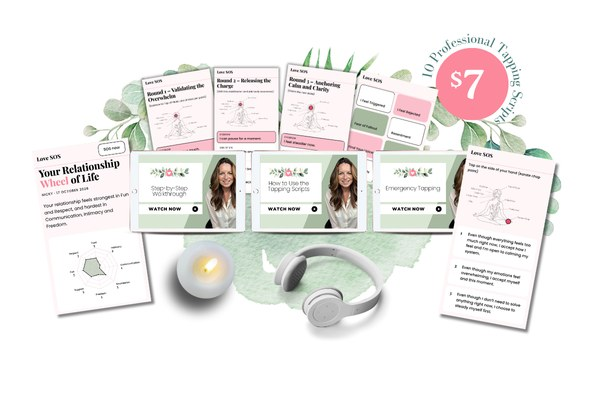

For women who keep the peace, until they can't
Calm down in minutes, before you say something you'll regret
Simple, interactive tapping on your phone that takes the heat out of the moment, so you can say what you mean instead of what you'll regret.
- The Emergency Emotional Reset, for when it's all too much
- 10 tapping scripts for real relationship moments
- 3 short videos showing you how
- Your personalised Relationship Wheel of Life
Instant accessOpens on your phone7-day money-back guarantee
If any of this sounds like you
- He asked what was wrong. I said "nothing". Then I lay awake replaying it until 3am.
- I snapped about who washed the dishes. It wasn't the dishes. It was years of being the one who notices everything.
- I bite my tongue to keep the peace. Then it all comes out at once, over something tiny.
- I sat right next to him on the sofa and felt completely alone.
- I said "it's fine, I'll do it" for the hundredth time, and something in me went quiet.
- I heard myself shouting and thought: who is this woman? I don't recognise myself.
It's never really about who washed the dishes. It's years of pent-up emotions arriving all at once. Love SOS gives you a way to catch them.
Introducing Love SOS
Your interactive calm-down kit for the moments in your relationship that get to you. It walks you through every step on your phone, so you don't have to think when you can't think straight. Use it in the kitchen after the row, in the car before you go home from work, or in bed while he's snoring next to you.
See inside Love SOS
What is tapping?
Tapping, also called EFT, means gently tapping points on your face and body while you say how you feel. It calms your nervous system in minutes, so you can think clearly again and say what you actually mean.
Why it feels like magic
Most calming tricks ask you to push the feeling down. Tapping lets you say exactly how you feel, out loud, while your fingertips tell your nervous system you're safe. So the feeling softens instead of building up, and it doesn't come back out later over something tiny.
- Calm in minutes
The feeling often starts to soften within the first round.
- Nothing to remember
Love SOS shows you where to tap and what to say, every time.
- You're back in charge
You choose what happens next, not the feeling.
-
SOS nowHow do you feel right now?I Feel TriggeredI Feel RejectedFear of FalloutResentmentFind Your VoiceReleasing the Blame GameEverything Feels NegativeExpressing LoveOpen to LoveFeeling Like I've Lost MyselfSTEP 1
Pick how you feel
Ten feelings that show up in real relationships, plus an SOS button for when it's all too much.
-
Round 1EyebrowI hold things in.Side of eyeI don't say what I need.Under eyeI'm afraid to speak up.Under noseI don't want conflict.ChinI stay quiet.STEP 2
Tap along
It shows you where to tap and what to say, one round at a time, with a breath in between.
-
Rate it again3You started at 8. You're now at 3.That's your nervous system settling.STEP 3
Feel it come down
Rate how strong the feeling is before and after, and watch the number come down. Most scripts take about five minutes.
What actually shifts
- You stop before it all comes outWhen you feel it rising, you have somewhere to go. You choose your words, and you're not left wondering who that woman was.
- You say what you actually mean"I feel invisible" instead of a row about the dishes.
- No more lying awake replaying itYou deal with it in the moment, so it doesn't follow you to bed.
- You stop biting your tongueYou can bring things up calmly, without it all coming out at once.
- You feel more like yourself againLess snapping, less shutting down. More of the woman you know you are.
- You know where to startYour personalised Relationship Wheel of Life shows which part of your relationship needs care first, and which script to use.
Instant access7-day money-back guarantee
Everything inside Love SOS
The Emergency Emotional Reset Start here
One tap from the home screen. For when it's all too much and you just need to calm your nervous system enough to think clearly. Comes with its own guided tapping video.
10 tapping scripts
For feeling triggered, rejected, resentful, scared of the fallout, struggling to find your voice, stuck in blame, when everything feels heavy, wanting to express love, feeling guarded after hurt, and feeling like you've lost yourself.
3 short videos from me
How to Use, Walkthrough and Emergency Tapping. You'll know exactly what to do, even if you've never tapped before.
The tapping points chart
Every point in one simple picture, so you never have to guess.
Your personalised Relationship Wheel of Life
Score 8 parts of your relationship in about 2 minutes and get your own results: where it feels good, where it feels hardest, and exactly which scripts to start with. Come back in a month and see what's shifted.

Why I made this
Hi, I'm Nicky. I'm an energy practitioner and a certified EFT Practitioner with EFT International, and I've helped clients clear over 56,000 emotions.
I know these moments from the inside too. My partner shows his love by doing things. He built me an office and a gym. I need to hear it. For a long time that gap left me feeling unseen, and the feeling always arrived long before the right words did.
I still use the Emergency Emotional Reset every week. Not because something's wrong, but because that's what real relationships are like. It's how I come back to myself before I say something I don't mean.
In my sessions, I see the same thing again and again. It's never really about the argument. It's an old feeling that got there first. I can clear what sits underneath in a session, but I wanted women to have something for the moment itself.
That's why I made Love SOS: the tapping I'd walk you through myself, ready on your phone whenever you need it.
Nicky xoxo
What clients say about working with Nicky
- I feel happier, calmer, there's been positive changes at home.
- Today I found myself feeling happy and light. I haven't felt that in months and months.
- I truly thought hope for the future and a zest for life were gone to me, but I now realise they are not.
One small price. Yours to keep.
One-time payment
Less than a coffee and a slice of cake. And it's there every time you need it.
- The Emergency Emotional Reset
- 10 tapping scripts
- 3 short videos
- The tapping points chart
- Your personalised Relationship Wheel of Life
- Opens on your phone, tablet or computer
Instant access. And if it's not for you, email me within 7 days for a full refund.
What people ask before they buy
What is tapping, and does it actually work?
Tapping (EFT) is a simple technique where you tap points on your face and body while naming what you feel. It's used by practitioners around the world to calm stress and big emotions. Most people feel a difference the first time they try it.
Does my partner need to do anything?
No. Love SOS is just for you. He doesn't need to know, join in or change anything. When you feel calmer, the whole conversation changes anyway.
How do I get it?
Straight after you buy, you'll get your link and password, on screen and by email. It opens on your phone, tablet or computer.
I've never done tapping before. Will this work for me?
Yes. The videos show you exactly where to tap and what to do, and the kit walks you through each round. Most people find it surprisingly simple.
How long does each script take?
A few minutes. Three short rounds, with a breath in between. About the time it takes to boil the kettle.
What if the same feelings keep coming back?
That's not you failing. It usually means there's something deeper underneath, often an old hurt your heart is still protecting. The scripts help you calm the moment. Clearing what's underneath is the deeper work I do.
What if I can't tap because I'm around other people?
Tap quietly on the side of your hand or your fingertips and say the words in your head. Or step away for a minute, even to the bathroom, and use the Emergency Emotional Reset.
Is this therapy?
No. It's a self-help tool for calming everyday emotional moments. It isn't a replacement for medical or professional support. If you're struggling, please reach out to a professional.
If it stops one argument you'd regret, is $7 an obvious yes?
The next time it starts to build, you'll have somewhere to go.
Get Love SOS for $7Instant access7-day money-back guarantee